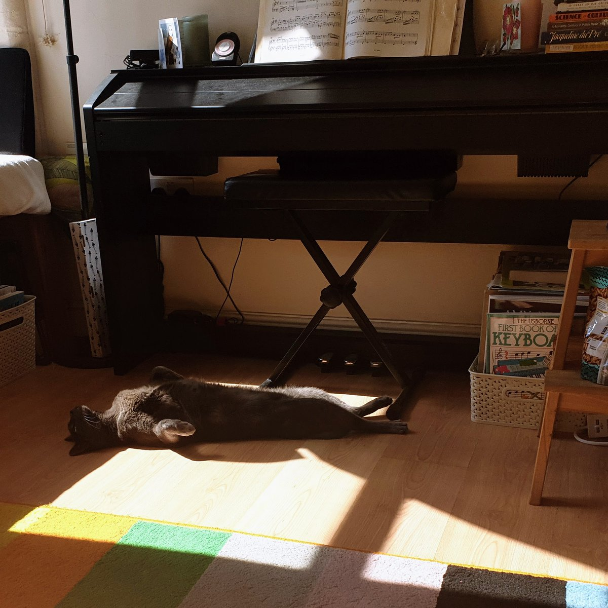

https://twitter.com/wetgenes/status/1561488657508450307 Then, it took plenty of time to pass through the doors and wind holes, for no one person or thing was in a hurry, when they were young. Moreover, when the fireplace was in the middle of the floor, the whole family sat around it and had a sociable time.
People hate all new technologies. (in the same way)
Even chimneys?
Especially Chimneys!
When chimneys were first added to houses in Wales, and the style of house-building changed, from round to square, many old people found fault with the new fashion of letting the smoke out.
Nope is good, have seen it twice :)
Feels like Tremors to me in a lot of ways.
Which also means I'm really looking forward to the six straight to video sequels staring only new Burt who must have survived somehow and turns up each time with bigger and badder cameras.

Narrative is the path to the dark cycle. Narrative leads to Quick Time Events. Quick Time Events lead to hate. Hate leads to Narrative.
https://twitter.com/IcepickInTheory/status/1557340321285013505 @IcepickInTheory I played a steam demo of that a while back but I don't think I got as far as any actual dams. Just remember city building but with beavers. :)
I wonder if you could do a "Bridge Builder" style physics game but with dams and a decent water simulator.
So the water slowly builds up and then CRACK WHOOSH you fluffed it.
Everyone loves seeing a dam burst and it can be a 2D building slice interface for a 3D simulation. https://twitter.com/gutenberg_new/status/1557144778214494208
Everybody enjoys fun. Our new prize collection consists of a false moustache, comic songs, funny pictures, photos of pretty girls, money making secrets, guide to dreams, etc. We will send the prize collection, postpaid, on receipt of only six 1 cent stamps https://twitter.com/gutenberg_new/status/1556737101294489600
Just because you can't hire David Bowie as an actor does not mean that you can't hire Weird Al to perform a parody cover of Starman for the shows theme tune.
Pure laziness and a total insult to the fans.
https://twitter.com/davidcapello/status/1555286998440706048 @davidcapello @beast_pixels @aseprite I know there is always the fear of committing internal formats to disk but I think its reasonable to cease support of old undos if you need to.
IE allow breaking changes to bump the version and the undo will stop loading.
When it works, yay, when it doesn't, meh, no big deal.
https://twitter.com/mrdoob/status/1555680569597775872 @mrdoob That reminds me, I'm sure there is some sort of X-COPY interface based idle game just waiting to be made.
Re-live the thrills of copying disks with authentic drive head scrunching noises :)
This sure is some old timey wimey crossy wossy. https://twitter.com/gutenberg_new/status/1555317720937181184
I switched from PC to GBA games in the early 2000s specifically because I figured I could make them faster than they could be cancelled.
Around 6 month or less (sometimes much less) dev time.
and even then I had projects cancelled halfway through :) https://twitter.com/jeremy_peel/status/1554765263265988610
Sunbeam Piano Cat

https://twitter.com/wetgenes/status/1554873202643537921 @davidcapello @beast_pixels @aseprite The actual undo code is mostly complicated by keeping track of image size changes and other horrible things like that.
Its pretty much all here in lua only.
https://github.com/xriss/gamecake/blob/master/lua/wetgenes/grdhistory.lua
https://twitter.com/davidcapello/status/1554863950537318404 @davidcapello @beast_pixels @aseprite It's just a custom PNG chunk containing msgpack data (compressed with zlib). Which gives a lot of structural freedom but is still in a standard format.
Then all the usual undo stuff within that.
Actually its msgpack within msgpack with each undo state compressed separately.
https://twitter.com/wetgenes/status/1554812609152618497 @davidcapello @beast_pixels @aseprite APNG gets me frames and I use a "sprite sheet layout" to put layers into a single image. So that with metadata means all the pixels are in obvious PNG places and we can still have complex layers to put them all together.
https://twitter.com/davidcapello/status/1554544286531813377 @davidcapello @beast_pixels @aseprite APNG is annoying in that you need the patched libpng and that it is not just a part of libpng as it is such a useful addition.
I have an UNDO chunk that lets me save history with each PNG and a JSON chunk which is just so generic and useful for random bits and bobs.
https://twitter.com/davidcapello/status/1554539754745741312 @davidcapello @beast_pixels @aseprite I'd argue that extending the PNG format and adding custom chunks makes the most sense.
Well it's what I do :)
Not that hard, least it is no harder than dealing with PNG files in general. At the very least I reckon adding a JSON text chunk with extra custom junk is worthwhile.
I thought I had managed to miss all the cultivation based games but it seems that they are only just starting to exist. https://twitter.com/WhatsOnSteam/status/1554194772600004609